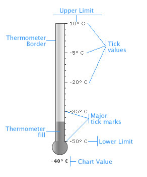

Thermometer Gauge > Elements of the gauge |
A thermometer gauge consists of the following elements:
Before going into the details of each of them, let’s have a look at a standard thermometer gauge enlisting the various basic components: |
|  |
| Thermometer Border and Fill The fill level in a thermometer gauge helps the end user to decipher the value being illustrated. The thermometer can also have a border around it. Tick Marks
Value Display Annotations Now that we are aware of the basic components that make up a thermometer gauge, lets go ahead to build a sample thermometer gauge. |